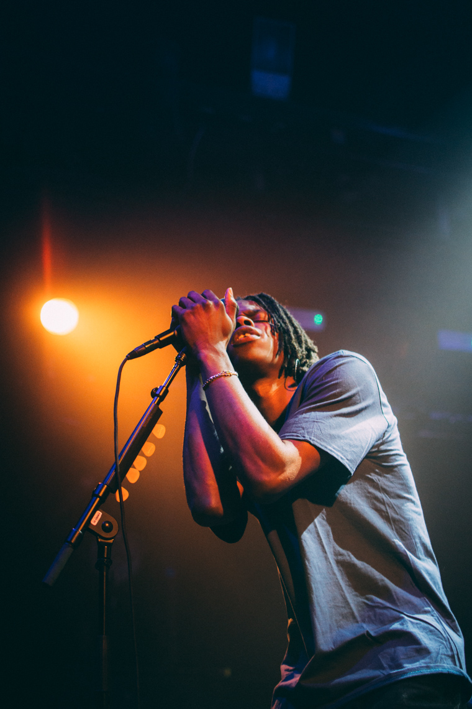
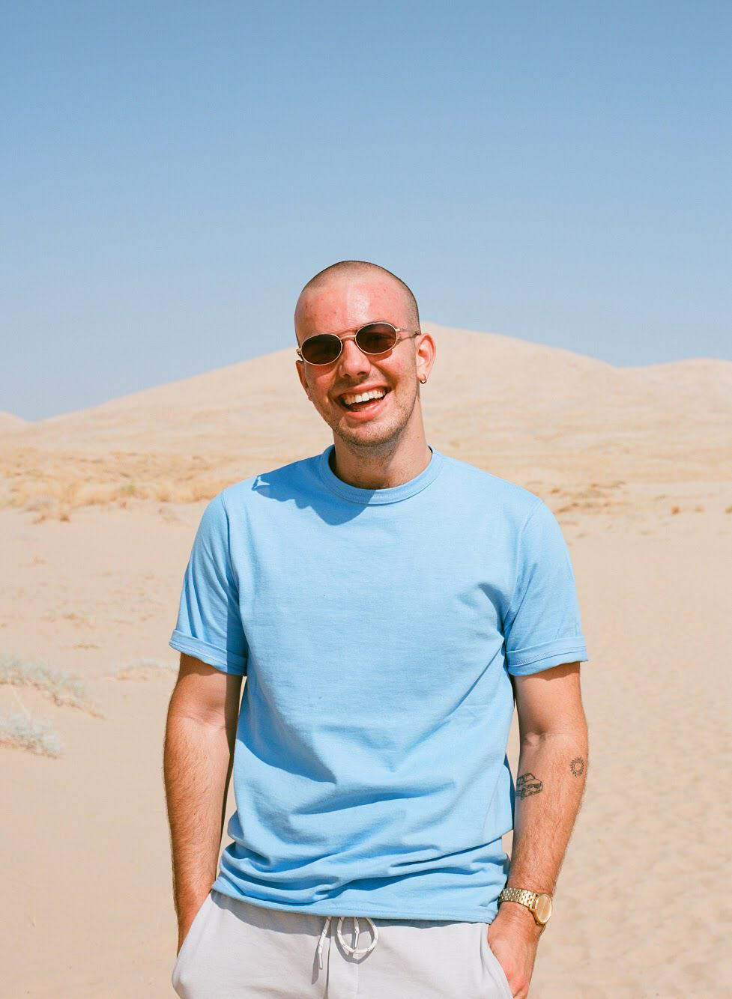
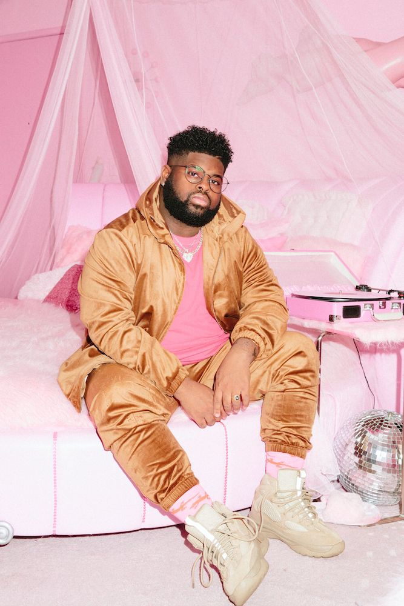
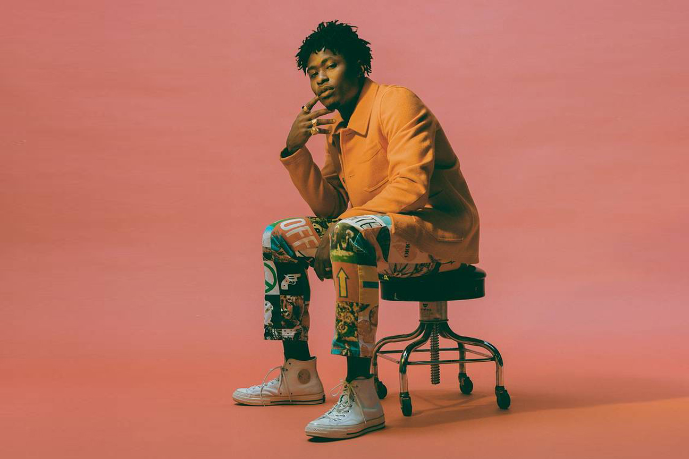

Dauphine’s Revival is a mix of Pop, Soul, R&B, and Hip-Hop music. It employs electric beats, hard bass and was recently hailed as “New Orleans” brightest new stars in a generation and New York Magazine wrote that “Dauphine’s Revival takes in a century-plus worth of sounds—ragtime and jazz and gospel and soul and R&B and hip-hop—and attacks everything they play with festive fervor.”
Daniel Caesar
In 2014, Caesar received widespread critical acclaim for his debut EP Praise Break, which was ranked No. 19 on the "20 Best R&B Albums of 2014" by Rolling Stone. His music is influenced by religion, which played a large role in his upbringing, as well as unrequited love.
Mac Ayres
Ayres grew up in Sea Cliff, New York, and graduated from North Shore High School, where he played first base on the varsity baseball team. He attended the Berklee College of Music in Boston, Massachusetts from 2014–2017, dropping out to work on his Drive Slow EP. He is self-taught at each instrument he plays, learning piano at age 11, and guitar at age 16. He is the oldest of six siblings. He currently lives in Los Angeles, California.
Pink Sweats
Pink Sweats didn't grow up with a lot of musical influence until he was 17 years old, but admired artists like Michael Jackson, Prince, and Kanye West. He became a musical artist after surviving a three-year battle with Achalasia. His stage name was adopted as he always wore pink sweatpants and was given the nickname "Pink Sweats". He first started making music at the age of 19 as a demo vocalist at Sound Stigma Studios, where he discovered his love for songwriting and began to develop his career in music. He produced in different genres of music for rapper Tierra Whack and country duo Florida Georgia Line.
Lucky Dave
David Debrandon Brown professionally known as Lucky Daye, is an American singer and songwriter from New Orleans, Louisiana. He is signed to Keep Cool Records and RCA Records. He released his first EP, I on November 9, 2018, and his second EP, II, on February 6, 2019. The EPs were part of a series leading up to his debut studio album Painted, which was released on May 24, 2019.
